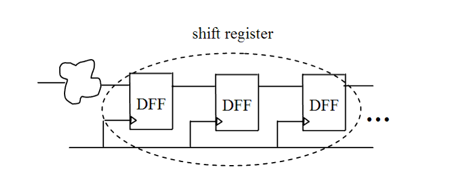

| Description | This rule fires when Leda detects shift registers in the design. More than one flip-flop with the same control pin and serialized data pins produce shift registers. You can specify the minimal number by setting parameter MIN_SHIFT_REGISTER_FF_NB, so that any serialized flip-flops with the accounted number greater than this minimal number is taken as shift register. The default value of the parameter MIN_SHIFT_REGISTER_FF_NB is 1. You can activate this rule to double check these structures. |
| Policy | DESIGN |
| Ruleset | STRUCTURE |
| Language | VHDL/Verilog |
| Type | Hardware |
| Severity | Error |
This is an example of invalid Verilog code, followed by a circuit diagram that illustrates the problem:
module ntl_str30_top; ... //DFF - flip-flop DFF I0(.Clock(Clock), .Din(Din), .Dout(Data_0)); DFF I1(.Clock(Clock), .Din(Data_0), .Dout(Data_1)); DFF I2(.Clock(Clock), .Din(Data_1), .Dout(Data_2)); // NTL_STR30 fires -- shift registers endmodule